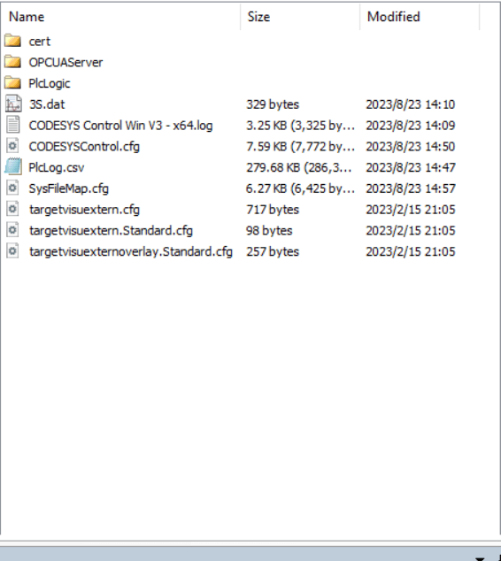
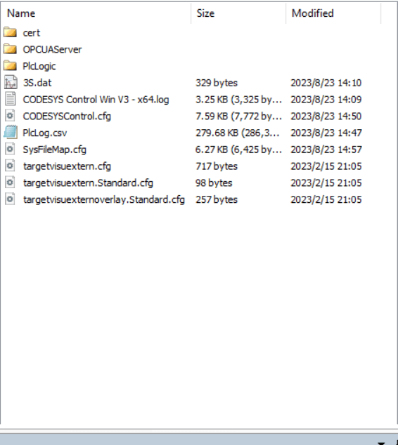
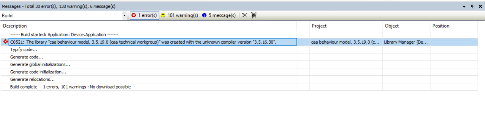

codesys 运行时调用外部G代码文件的编程路径
在下载到真实设备上和 simulation 模式时，调试时需要引用的路径是不一样的。
不管是哪种模式下，codesys 本身运行的一个容器环境根目录是如下：

PlcLogic 文件夹是 POU 运行的根目录，所有 G 代码文件的索引都是以此目录为根目录的。在程序中定义路径地址的时候只需要写 POU 根目录的子路径即可。
在下载到真实设备上和 simulation 模式时，调试时需要引用的路径是不一样的。
不管是哪种模式下，codesys 本身运行的一个容器环境根目录是如下：

PlcLogic 文件夹是 POU 运行的根目录，所有 G 代码文件的索引都是以此目录为根目录的。在程序中定义路径地址的时候只需要写 POU 根目录的子路径即可。
打开一个别人的项目后编译，发现出现 The library "caa behaviour model, 3.5.19.0 (caa technical workgroup)" was created with the unknown compiler version "3.5.16.30" 的报错：

但是我已经选择下载了缺失的库了，查询后发现是我的 codesys 版本过高，下载的对应库版本也高，而项目之前创建的时候可能是基于低版本库的，需要手动切换回对应版本的库即可。
library manager 下选择 placeholders 定位到报错的那个库：
双击后显示版本菜单，选择对应低版本的选项：
再次编译报错就会消失。
通过 ssh 可以远程登录服务器并执行相关操作，常用指令如下：
ssh user@address -p 22
执行命令后会提示输入用户密码才能最终进入。
如果在脚本中我们需要通过 ssh 登录用户并执行相关命令的话就有些麻烦了。
可以通过安装 sshpass 的方式在脚本中定义 ssh 密码，从而解决需求。
Linux 默认会有一个 root 用户，但日常直接使用 root 有一定安全隐患，所以通常情况下我们习惯于创建一个新用户来登录使用，下面介绍常规的建立流程。
建立新用户 vpsadmin：
adduser vpsadmin
neural filters 是 Photoshop 最新的 AI 技术，但是需要登录账号以及订阅正版软件。最近发现网上分享的版本可以实现这一功能，但是我自己试验了一下其中的 filters 都需要在线下载，但是不知道由于盗版的原因还是网络的原因，一直下载失败，搜索后发现可以将别人打包好的这些 filters 文件直接放入 ps 固定目录即可。
V24 版 Photoshop neural filters 下载：
https://krakenfiles.com/view/Gp1hmKDnC7/file.html
https://krakenfiles.com/view/9DM2lJKAOs/file.html
下载后解压，将其中的所有文件和文件夹放入，注意不同版本 PS 需要路径中的数字不同：
%APPDATA%\Adobe\UXP\PluginsStorage\PHSP\24\Internal\com.adobe.nfp.gallery\PluginData~/Library/Application Support/Adobe/UXP/PluginsStorage/PHSP/24/Internal/com.adobe.nfp.gallery/PluginData重新打开 Photoshop，通过 help - sign in 登录 adobe 账号，然后就可以打开 filters - neural filters 了。
参考链接：
https://www.reddit.com/r/GenP/comments/yd26z4/neural_filters_not_downloading/
https://blog.niekun.net/archives/1187.html